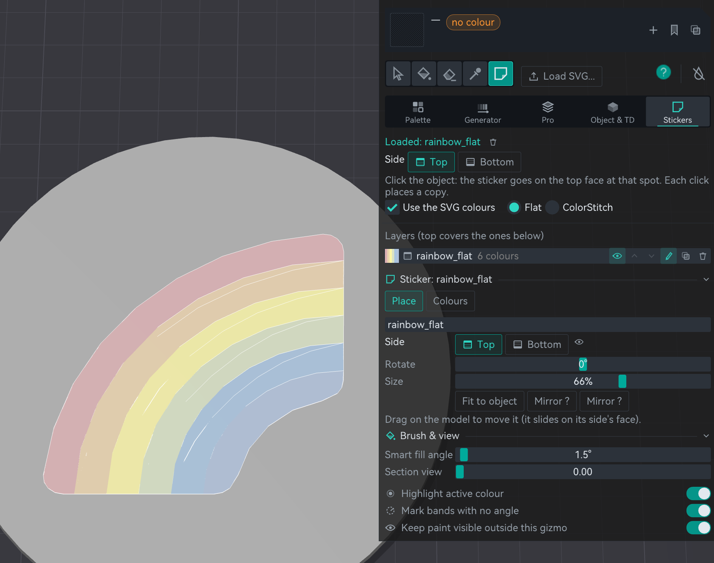
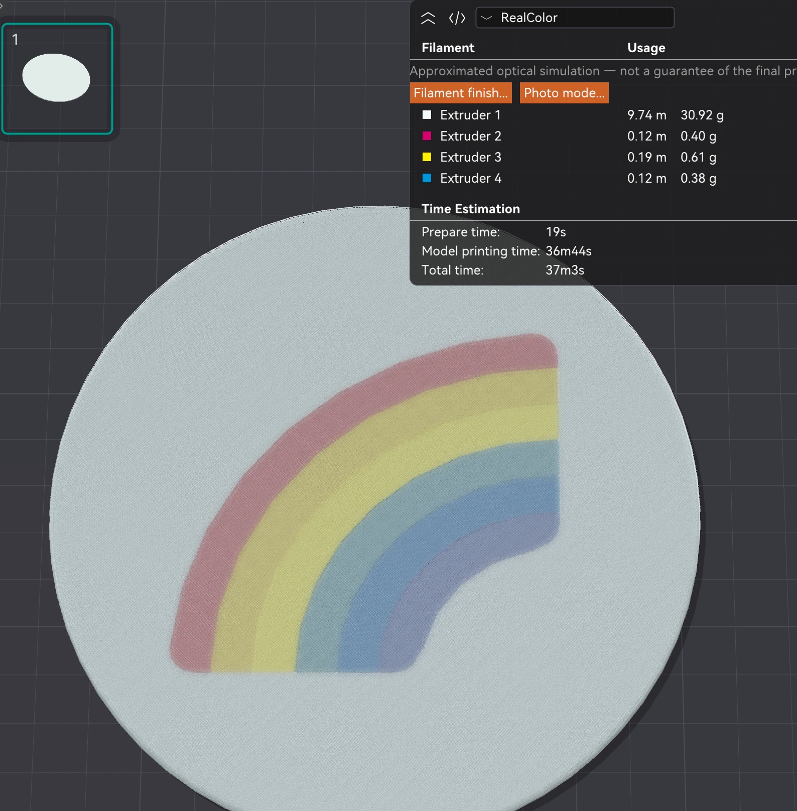
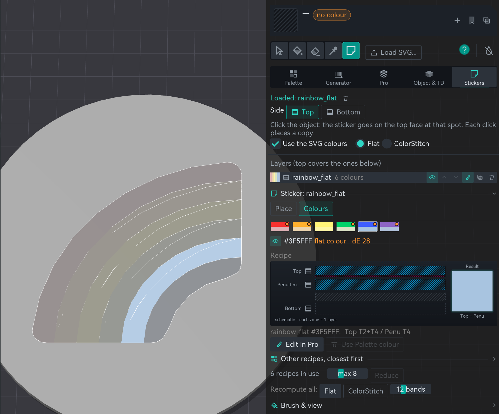
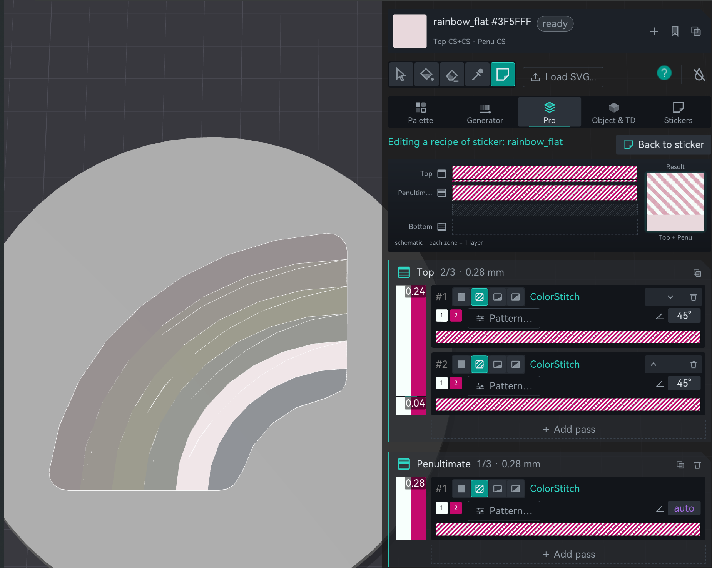
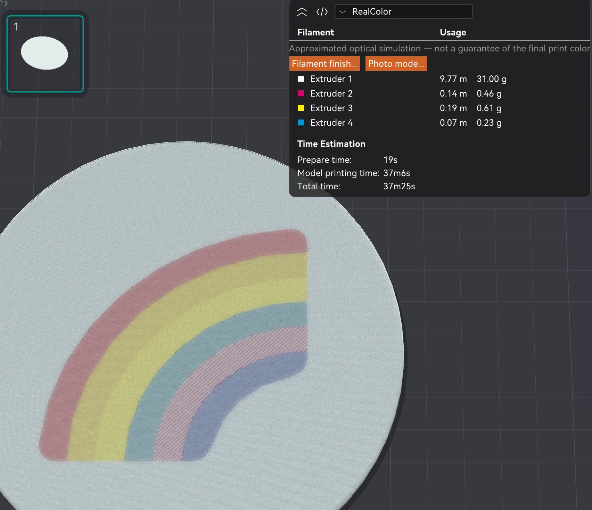

§6 — Colour
SVG stickers
Load a vector drawing, click the top or the bottom face of a part, and every colour of the drawing becomes a recipe made from your four filaments. That is the quick part. The fun part is that any of those recipes can be swapped for one of your own: a stripe, a weave, a ramp. A HueForge kind of result, with vectors and sharp edges, on any flat face.
- no gate
- experimental
- 2.3.8, own tab and multicolour 2.4.8
Where ColorStitch Painter›Sticker tool›Load SVG…›Stickers tab
What a sticker is
A sticker is not geometry. The SVG becomes a flat mask on the face, and each colour region of it carries a Sandwich recipe that is worked out when you slice. Nothing is added to the model, nothing to boolean, nothing to clean up afterwards. Stack several and the topmost wins where they overlap.
- Multicolour. Every colour of the drawing gets its own recipe from your four filaments, Flat or ColorStitch. Backgrounds are dropped, see through shapes are merged, CSS colours are read, and linear gradients print as bands or as one ColorStitch ramp.
- Top or bottom. It sits on the top face or on the bottom one (the face on the bed, or the underside of an overhang). Bottom recipes are worked out as seen from the bed.
- You can see it. Every sticker shows in the painter and in the normal 3D view, cut to the face it sits on.
From an SVG to a pattern, step by step
A rainbow on a white disc, four filaments loaded: white, magenta, yellow and cyan. The drawing asks for six colours, none of which is in a spool. Download the example project and follow along.
After opening it, turn Enable prime tower off and on again, or the tower may not show up. It is an odd bug we still have to look into.
-
Put the sticker on. Pick the Sticker tool, press Load SVG…, keep Use the SVG colours ticked and click the top face. In the Place tab you can rotate it, size it, mirror it or fit it to the object, and drag it across the face.

The sticker on the disc. One layer, six colours, a recipe for each. -
Slice and look at it in RealColor. The preview mixes the passes with the TD of each filament, so you see roughly what the print will look like before you print it. Every band came out as a soft tone made from the four spools.

The automatic recipes, sliced, in RealColor. -
Pick the colour you want to change. In Colours, each square is one colour of the drawing: the top half is what the SVG asks for, the bottom half what your filaments give. Click one and you see its recipe, how far it is from the target (ΔE) and the closest other recipes.

The blue band selected: what the SVG wanted, what the spools give, and the recipe behind it. -
Change its recipe for the effect you want. Edit in Pro opens that recipe in the Pro tab. Here the band became two ColorStitch passes of white and magenta at 45° on top and another underneath: a stripe, not a tone. Back to sticker takes you back.

The same band, now a ColorStitch stripe of white and magenta. -
Slice again. That one band now prints as a pink and white stripe, while the rest of the rainbow keeps its tones.

Five bands as tones, one as a pattern.
The automatic recipes get you close to the drawing's colours. Every recipe is still a recipe, so any colour region can become a stripe, a weave, a gradient or a solid of one spool. The drawing decides where; you decide what prints there.
Try it on the rainbow
ColorSci.cpp,
real algorithm), TD 1.5 mm for the three colours, over a white part.
The search here tries one or two passes of 0.04 to 0.28 mm each; the app's own search tries
more and can pick a different recipe. The stripe uses the pattern engine
(SurfaceColorMix.cpp). Drawing: Fluent Emoji, MIT.
Editing a sticker
The pencil on a layer opens its controls right under the layer list, in the same tab. Place has the side, rotation, size, mirror and a button to restore its proportion if the object was scaled unevenly. Colours has the row of squares, each recipe drawn as in Pro, the closest other recipes, Edit in Pro, and a cap on how many recipes the sticker may use, with Reduce to merge the closest ones. Recompute all redoes every recipe as Flat or as ColorStitch, with the number of bands for gradients.
The colours match what prints 2.4.9
A sticker's colours come from stacking thin passes of your filaments over the part, a little like HueForge does with layers. Since 2.4.9 the colour a recipe predicts uses the same TD, in millimetres, and the same layer thickness as RealColor and RealView. Before, the prediction saw each thin pass as much more opaque than it is, so on a white part it picked plain filament colours and never tried mixes. Now a rainbow sticker on white gets its pinks, oranges and greens, and on a coloured part the base shows through the way it does on the print.
Recipes made before 2.4.9 were found with the old prediction. Open the sticker with the pencil on its layer and press Recompute all in Colours, or place it again, and the recipes are searched again with the new one.
With only two thin layers on top (Top and Penultimate) there is a limit to how far a colour can move away from the part's colour, more so with a high TD. A thin orange over white looks pale on the print too.
The catch
- A sticker covers everything under it. Hand painted zones and MMU paint both: it is applied last.
- The 3D view draws each colour as a flat swatch. A weave or a smooth gradient shows in the recipe and in the slice, not yet on the model. RealColor in the preview is the place to judge it.
- Gradients: linear ones are read. Radial gradients, which many emoji sets use, are not a promise; try the SVG first.
- Wall recolouring recipes don't recolour walls on a sticker. The Place tab warns.
- Booleans and Split don't keep stickers yet. The painting carries over, the stickers do not.
- Sliced and checked in the G-code; not yet proven over many prints.